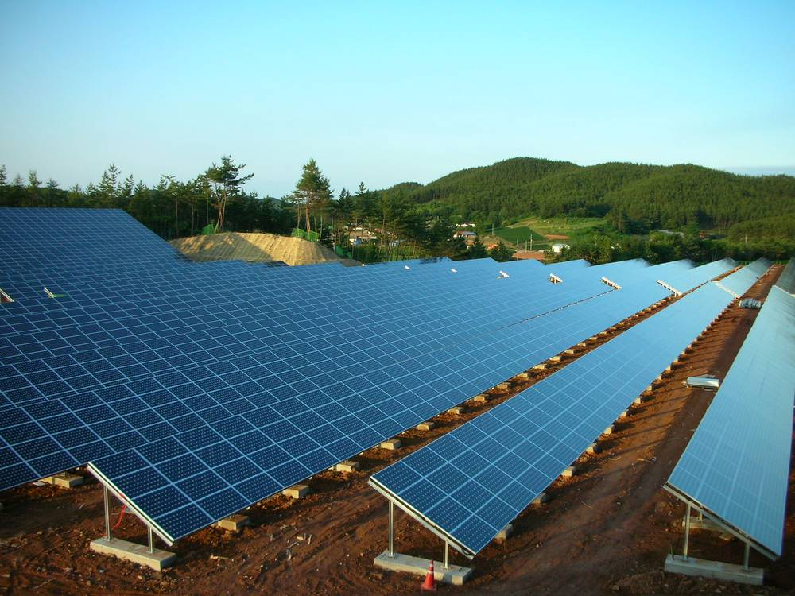

햇빛소득마을 선정 436곳 가운데 바로 시작할 수 있는 곳은 23곳…하천구역·한전 계통·'동' 명칭에 발목

정부는 올해 700곳 선정을 목표로 속도…지자체 규제와 전력망 부족으로 현장은 멈춰 있어
정부가 올해 햇빛소득마을 700곳 선정을 목표로 속도를 내고 있지만, 지금까지 공모에서 뽑힌 436곳 가운데 곧바로 사업을 할 수 있는 곳은 23곳, 5%에 그쳤다. 이 사업은 국공유지에 마을 태양광발전소를 짓는 것으로, 주민이 사업비의 15%를 모으면 나머지 85%는 정부가 낮은 이자로 빌려준다. 충남 공주시 사현리 주민들은 국유지 사용 허가를 받아 설계까지 마쳤으나, 부지 옆 실개천 때문에 하천구역에 해당한다는 이유로 공주시가 반대해 사업이 멈췄다. 공주시 사현1리 이장은 "설계까지는 다 했는데… 이게 이용할 수 없다고"라고 말했다. 경북 경산시 부제리는 부지와 정부 지원 사업비를 확보하고도 한국전력이 전력망 연결이 어렵다고 알려 와 막혔고, 강원 강릉시 장현동은 행정구역 명칭이 '리'가 아니라 '동'이라는 이유로 신청조차 받아들여지지 않았다. 경남 김해시 초전마을은 도로공사 땅에 1메가와트(MW) 규모 마을발전소를 지어 연간 2억 원 수익을 기대하고 있지만, 정부가 내년까지 1,500곳으로 늘리려면 관계기관 간 엇박자부터 풀어야 한다는 지적이 나온다.
시민에너지 관점
선정 436곳 가운데 23곳만 움직인다는 숫자는 마을의 의지가 아니라 인허가와 전력망이 사업을 가로막고 있음을 보여 준다. 주민이 소유한 재생에너지가 널리 퍼진 덴마크 삼쇠섬이나 독일 에너지협동조합의 나라들은 주민 참여를 제도로 뒷받침했다. 선정 수만 늘리면 뽑히고도 짓지 못하는 마을만 쌓인다는 우려가 있지만, 그렇다고 속도를 늦출 일이 아니라 마을이 사업을 소유하고 수익을 나누는 구조를 지키면서 걸림돌을 하나씩 걷어 내야 한다. 정부와 지자체, 한국전력은 하천구역·행정구역 같은 기준을 먼저 정리하고, 신청 마을에는 전력망 연결 가능 여부를 사업 전에 알려 주기 바란다.
출처: MBC 2026-11-10 류현준 원문 보기
「日差し所得村」選定436カ所のうち、すぐ着手できるのは23カ所…河川区域・韓電の系統・「洞」の名称が壁に
政府は今年700カ所の選定を目標に加速…自治体の規制と送電網不足で現場は止まっている
政府は今年、햇빛소득마을(「日差し所得村」)700カ所の選定を目標に加速しているが、これまでの公募で選ばれた436カ所のうち、すぐに事業を進められるのは23カ所、5%にとどまる。この事業は国公有地に村の太陽光発電所を建てるもので、住民が事業費の15%を集めれば、残り85%は政府が低利で貸し出す。忠清南道公州市(공주시)サヒョン里の住民は国有地の使用許可を得て設計まで終えたが、敷地そばの小川のために河川区域に当たるとして公州市が反対し、事業が止まった。公州市サヒョン1里の里長は「設計までは全部したのに…ここは利用できないと言われた」と語った。慶尚北道慶山市(경산시)プジェ里は敷地と政府の支援事業費を確保しながら、韓国電力(한국전력)から送電網につなげないと伝えられて行き詰まり、江原道江陵市(강릉시)チャンヒョン洞は行政区域の名称が「里」ではなく「洞」だという理由で申請すら受け付けられなかった。慶尚南道金海市(김해시)チョジョン村は道路公社の土地に1メガワット（MW）規模の村の発電所を建て、年間2億ウォンの収益を見込んでいるが、政府が来年までに1,500カ所に増やすには、関係機関のちぐはぐな対応を解消することが先だとの指摘が出ている。
市民エネルギーの視点
選定436カ所のうち動いているのは23カ所だけという数字は、村の意欲ではなく許認可と送電網が事業を阻んでいることを示している。住民が所有する再生可能エネルギーが広がったデンマークのサムソ島やドイツのエネルギー協同組合の国々は、住民参加を制度で支えてきた。選定数だけ増やせば選ばれても建てられない村が積み上がるとの懸念はあるが、速度を落とすのではなく、村が事業を所有し収益を分け合う仕組みを守りながら障害を一つずつ取り除くべきだ。政府と自治体、韓国電力は河川区域や行政区域の基準を先に整理し、申請した村には送電網への接続可否を事業の前に知らせてほしい。
出典: MBC 2026-11-10 류현준 原文を読む
“阳光收入村”入选436个，能立即启动的仅23个…河川区域、韩电电网、“洞”的名称成绊脚石
政府今年以700个为目标加速推进…地方政府规制和电网不足使现场停滞
政府今年以遴选700个햇빛소득마을（“阳光收入村”）为目标加快推进，但目前公开征集入选的436个村中，能立即开展项目的只有23个，占5%。该项目是在国有、公有土地上建设村级光伏电站，村民筹集项目费用的15%后，其余85%由政府以低息借出。忠清南道公州市（공주시）沙岘里的村民取得国有土地使用许可并完成了设计，但因场地旁的小溪属河川区域，公州市表示反对，项目被搁置。公州市沙岘1里的里长说：“设计都做完了……却说这里不能用。”庆尚北道庆山市（경산시）扶堤里落实了场地和政府补助的项目费，却被韩国电力公社（한국전력）告知无法并网而受阻；江原道江陵市（강릉시）长岘洞则因行政区划名称是“洞”而不是“里”，连申请都未被受理。庆尚南道金海市（김해시）初田村在道路公社的土地上建起1兆瓦（MW）规模的村级电站，预计年收益2亿韩元，但有观点指出，政府要在明年前把数量增至1,500个，必须先解决相关机构各行其是的问题。
市民能源视角
436个入选村中只有23个能动起来，这个数字说明阻碍项目的不是村庄的意愿，而是审批和电网。居民所有的可再生能源得以普及的丹麦萨姆索岛和德国能源合作社所在的国家，都用制度支持居民参与。有人担心只增加入选数量会让“入选却建不成”的村庄越积越多，但这并不意味着要放慢速度，而是要在守住村庄拥有项目、分享收益这一结构的同时，逐个清除障碍。希望政府、地方政府和韩国电力先理顺河川区域、行政区划等标准，并在项目启动前告知申请村庄能否并网。
来源: MBC 2026-11-10 류현준 查看原文
Only 23 of 436 Selected Sunlight Income Villages Can Start Right Away, Held Back by River Zoning, Grid Limits and a Village Name
The government aims to pick 700 villages this year, but local rules and a lack of grid capacity have stalled projects on the ground
The government is pushing to select 700 Sunlight Income Villages (햇빛소득마을) this year, but of the 436 villages chosen so far in open calls, only 23, or 5%, can begin work right away. Under the programme, villages build solar plants on state and public land; residents raise 15% of project costs and the government lends the remaining 85% at low interest. Residents of Sahyeon-ri in Gongju (공주시), South Chungcheong Province, obtained permission to use state-owned land and finished the design, but Gongju city objected because a nearby stream puts the site in a river zone. The head of Sahyeon 1-ri said: "We finished the design, but they say we can't use it." In Bujae-ri, Gyeongsan (경산시), North Gyeongsang Province, the village secured a site and government project funds but was told by Korea Electric Power Corporation (한국전력) that it could not be connected to the grid, and Janghyeon-dong in Gangneung (강릉시), Gangwon Province, had its application refused because its administrative name is "dong" rather than "ri". Chojeon village in Gimhae (김해시), South Gyeongsang Province, has built a 1-megawatt (MW) village plant on Korea Expressway Corporation land and expects 200 million won a year, but critics say the government's plan to reach 1,500 villages by next year depends on first resolving the lack of coordination among agencies.
Citizen Energy View
That only 23 of 436 selected villages are moving shows that permits and grid access, not local will, are blocking projects. Countries where resident-owned renewables have spread, such as Denmark's Samsø island and Germany with its energy cooperatives, backed resident participation with policy. Some worry that raising the number of selections alone will leave villages that are chosen but cannot build, yet the answer is not to slow down but to keep the structure in which villages own projects and share the income while removing obstacles one by one. The government, local authorities and the power utility should first clarify standards such as river zones and administrative districts, and tell applying villages whether they can connect to the grid before projects begin.
Source: MBC 2026-11-10 류현준 Read the original